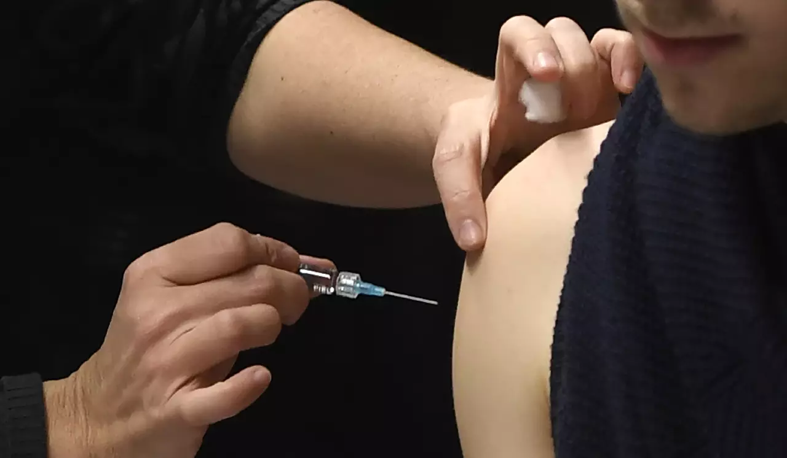

Face à la flambée des méningites, la vaccination pourrait encore s'élargir en France
Plusieurs morts, un nombre très élevé de cas... La flambée de méningites s'intensifie et les autorités sanitaires comptent élargir encore la vaccination.
 Face à la flambée des méningites, la vaccination pourrait encore s'élargir en France /Archives / PHILIPPE DESMAZESIl est grand temps, jugent certains médecins, qui regrettent un manque d'action et de lisibilité.
"On voit un nombre de méningites de plus en plus important", a souligné mardi auprès de l'AFP le ministre chargé de la Santé et de l'Accès aux soins, Yannick Neuder, dans le sillage de nouvelles recommandations de vaccination de la Haute autorité de Santé (HAS).
Les règles en la matière ont pourtant récemment changé face à l'importante recrudescence des méningites ces dernières années en France, comme dans d'autres pays.
Ces infections provoquées par des bactéries, les méningocoques, peuvent provoquer une méningite, mais aussi une septicémie, voire des arthrites ou des formes aux symptômes gastro-intestinaux. Extrêmement dangereuses, elles tuent un patient de manière foudroyante quand elles ne sont pas soignées et, même si elles le sont, entraînent une mortalité élevée et un gros risque de séquelles.
Les cas bondissent depuis plusieurs années, dans un contexte marqué par la fin des restrictions sanitaires de l'ère Covid. En 2024, plus de 600 infections ont été recensées, niveau record depuis 20 ans
Et le mouvement s'amplifie encore: en janvier et février, les cas ont largement dépassé le niveau d'un an plus tôt. En cause, au moins en partie: l'épidémie virulente de grippe, qui constitue un facteur de risque des infections à méningocoques.
Au-delà des chiffres, des décès ont marqué les esprits et rappelé que les jeunes sont les plus à risque: un enfant de 3 ans dans la Drôme, une jeune femme de 18 ans à Rennes...
C'est dans ce contexte qu'interviennent les nouvelles recommandations de la HAS. Elles visent à amplifier des règles introduites en janvier et qui, déjà, devaient répondre à l'essor de souches jusqu'alors marginales.
Il s'agit des méningocoques A, Y et, surtout, W, particulièrement meurtrier, qui ont quasiment supplanté la souche C. La B reste cependant dominante.
La vaccination est séparée en deux: jusqu'en 2025, un vaccin visait B et l'autre C. Depuis, ce dernier est remplacé par un vaccin rassemblant A, C, W et Y, obligatoire jusqu'à un an et recommandé chez les 11-14 ans.
Une campagne "avant l'été"
La HAS va désormais plus loin: le vaccin ACWY doit finalement devenir obligatoire jusqu'à l'âge de deux ans. Et, dans l'immédiat, il faudrait même le proposer à tous les enfants de moins de trois ans.
Pour les grands adolescents et jeunes adultes, la HAS appelle à lancer une grande campagne pour proposer le vaccin ACWY aux 15-24 ans qui n'auraient jamais été vaccinés contre les méningocoques.
Une campagne est déjà en cours à Rennes, après le cas mortel début février.
Parallèlement, la HAS renouvelle ses recommandations sur le vaccin anti-B, déjà obligatoire jusqu'à deux ans. Mais, désormais, elle prône aussi un rattrapage jusqu'à cinq ans chez les enfants ne l'ayant jamais reçu.
Quant aux plus âgés, sa position apparaît complexe. Elle ne le recommande pas chez les adolescents, jugeant trop courte sa durée de protection, mais souhaite qu'il soit remboursé à tous les 15-24 ans souhaitant le recevoir.
Ce point "n'est pas très clair", regrette auprès de l'AFP l'infectiologue Odile Launay, qui contribue, avec d'autres spécialistes, au réseau Infovac, un organisme qui n'a pas ménagé ses critiques sur la politique vaccinale anti-méningocoques.
"Les retards dans les décisions de recommander ou de rembourser une vaccination efficace ont de lourdes conséquences en termes de mortalité/séquelles", écrivait début mars Infovac, qui regrette la complexité des recommandations de la HAS mais aussi un manque de volonté politique en l'absence d'une vraie campagne de vaccination.
M. Neuder promet de vite mettre en oeuvre les principales recommandations de la HAS, tout en simplifiant le message envoyé au grand public.
La vaccination ACYW jusqu'à trois ans ? "C'est une histoire de quelques semaines", a-t-il assuré.
Le ministre envisage aussi "avant l'été" une grande campagne nationale à destination des 15-24 ans, sur le modèle de l'expérience rennaise. Puis, à partir de la rentrée scolaire, une campagne dans les collèges à destination des 11-14 ans, couplée à la vaccination anti-papillomavirus.